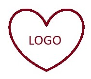

Loneliness is one of the biggest challenges older adults face—and one of the hardest for families to see.
Without daily connection, mental and physical health can decline—and families are left wondering.
Shine Circle changes that.
Consistent, predictable daily connection—so your loved one feels supported, and you feel at ease.
Friendly, structured conversations that create routine and connection.
We notice changes—so you’re never the last to know.
Gentle prompts to keep health on track.
You get visibility without having to constantly ask.
Built for adult children managing care from a distance— balancing life, work, and the responsibility of staying connected.
Seen. Heard. Informed. Never alone. Every day. SHINE: Connection you can count on.